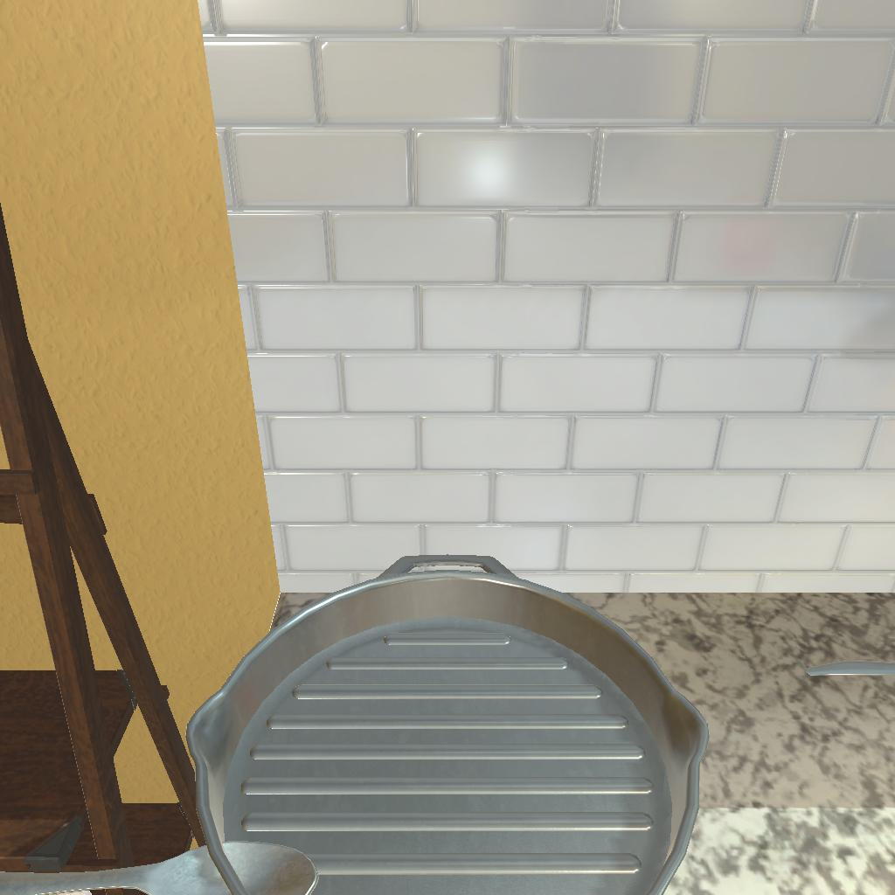

---------------------------------------------------------task: 16---------------------------------------------------------
--------------------------------------------------------------------------------------------------------------------------------------------------------------------
--------------------------------------------------------------------------------------------------------------------------------------------------------------------
Step:--------------------------------------------------------------------------5-------------------------------------------------------------------------------
----------------------------------------
VLM Prompt:
Image1:
**Instruction**
1. Analyze the provided image to identify all visible household objects, focusing on those relevant to the task description "put a cool pan in sinkbasin."
2. Use the analysis of the image and the task hint "The agent must find an object of the desired type, pick it up, go to a fridge, cool the object with the fridge, then find the correct location to place it, and put it down there. The agent does not need to use the fridge button or open the fridge to cool the object, and the agent just needs to do action that is "cool the object with the fridge"." to answer the question: what is the most reasonable action in the choices for the task description "put a cool pan in sinkbasin"?
4. Decide and write the answer using the template: The answer is: (i): , where i is the real number. If there is no desired object in the image, search every place based on **Initial Observation** to find the object. And if no one is exactly correct, choose a similar answer.
**Initial Observation**
You are in the middle of a room. Looking quickly around you, you can see cabinet (1-9), countertop (1-3), drawer (1-9), stoveburner (1-4), microwave (1), sink (1), fridge (1), toaster (1), coffeemachine (1), sinkbasin (1), shelf (1-3), garbagecan (1)
**Answer Choices**
(1): go to cabinet 2
(2): go to countertop 2
(3): go to drawer 1
(4): go to drawer 2
(5): go to drawer 3
(6): go to drawer 4
(7): go to stoveburner 1
(8): go to drawer 5
(9): go to stoveburner 2
(10): go to stoveburner 3
(11): go to stoveburner 4
(12): go to cabinet 3
(13): go to cabinet 4
(14): go to microwave 1
(15): go to cabinet 5
(16): go to cabinet 6
(17): go to cabinet 7
(18): go to sink 1
(19): go to fridge 1
(20): go to toaster 1
(21): go to coffeemachine 1
(22): go to cabinet 8
(23): go to drawer 6
(24): go to drawer 7
(25): go to drawer 8
(26): go to sinkbasin 1
(27): go to shelf 1
(28): go to shelf 2
(29): go to countertop 3
(30): go to shelf 3
(31): go to drawer 9
(32): go to cabinet 9
(33): go to garbagecan 1
(34): put pan 1 in/on countertop 1
(35): examine pan 1
(36): examine countertop 1
**Answer**
Let's think step by step by following the instructions.
----------------------------------------
----------------------------------------
Original Response:
The task is to put a cool pan in the sinkbasin. From the image, we can see a pan on the countertop, which seems to be the object we need to interact with for this task.
Since the first step is to find an object of the desired type (a pan), and we already see the pan, we can skip the steps involving going to cabinets, drawers, and other appliances.
Next, we need to cool the pan with the fridge. However, the instructions state that we don't need to use the fridge button or open the fridge; we just need to perform the action "cool the object with the fridge."
After cooling the pan, we need to find the sinkbasin to place it in. The sinkbasin is not visible in the image, but based on the initial observation, there is only one sinkbasin (1) in the room.
Therefore, the most reasonable action from the choices provided would be to first cool the pan, which is not explicitly mentioned as an option, and then go to the sinkbasin to put the pan in. However, since the cooling action is not an available choice, we must select an action that progresses us towards the goal.
The answer is: (26): go to sinkbasin 1.
----------------------------------------
----------------------------------------
>>> Refine Original VLM Response and Get Pure Action: go to sinkbasin 1
----------------------------------------
-----------------------------------------------------------------
Running time: 11.637961864471436 seconds
Total Money: 5.190139999999999
-----------------------------------------------------------------
-----------------------------------------------------------------
Text Observation:You arrive at loc 27. On the sinkbasin 1, you see a spoon 2, a vase 1, a faucet 1, and a knife 1.
-----------------------------------------------------------------
UNSUCCEED